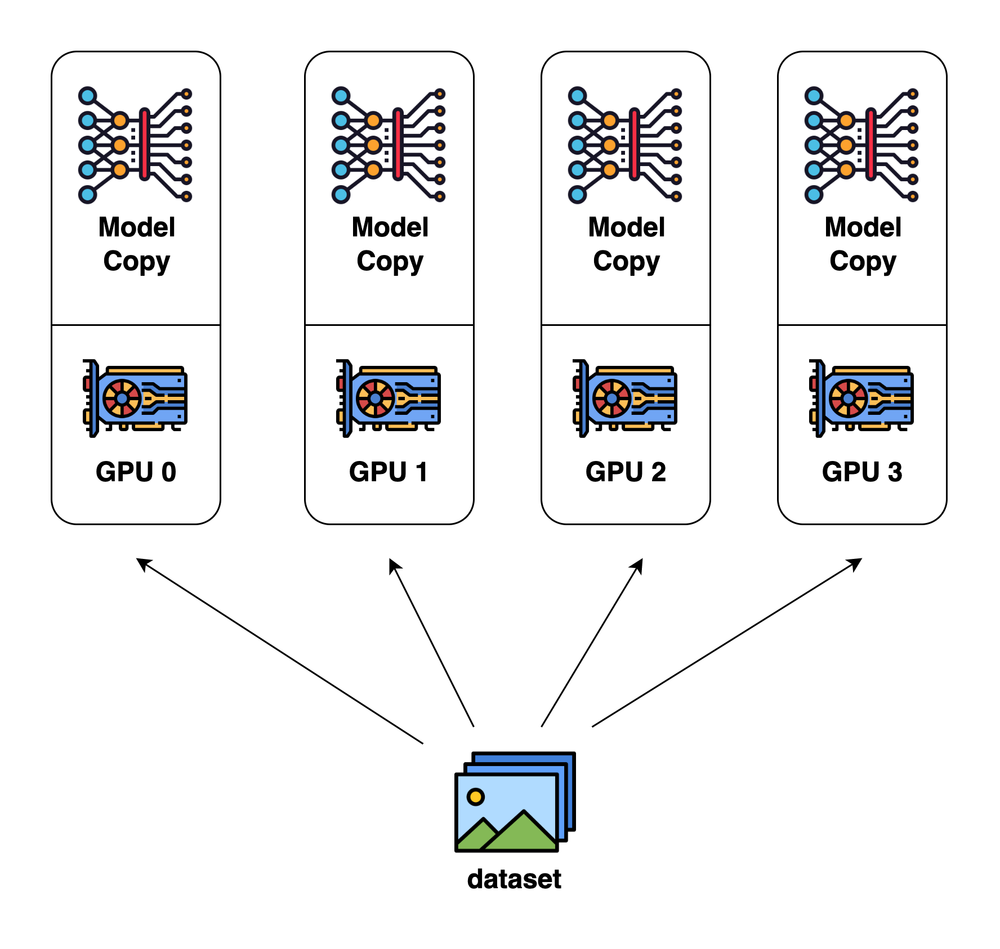
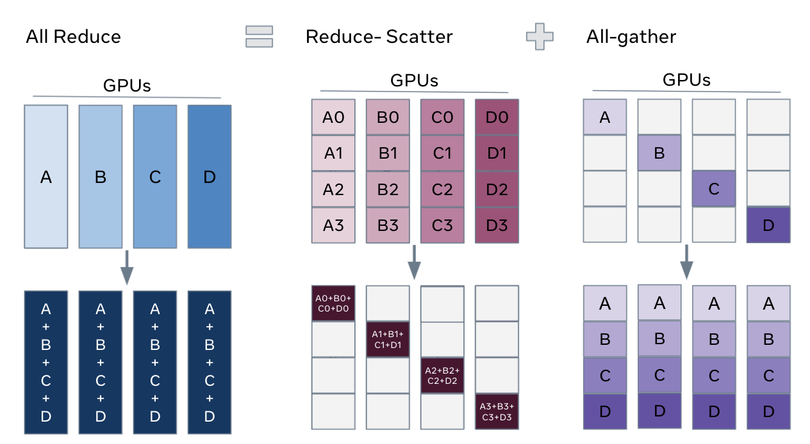
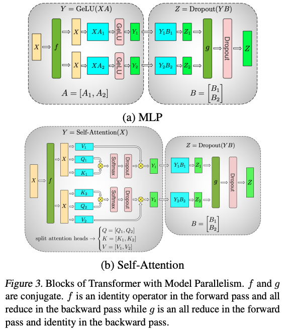
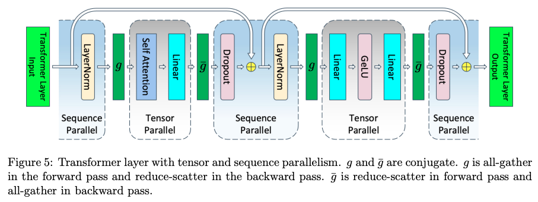

Parallelisms#
Note
In the modern machine learning the various approaches to parallelism are used to:
Fit very large models onto limited hardware.
Significantly speed up training - finish training that would take a year in hours.
Data Parallel (DP)#
It works by:
Replicating the model onto multiple GPUs (one “master” GPU and others as “slaves”).
Splitting the input batch into smaller sub-batches, each sent to a different GPU.
Each GPU computes forward passes on its sub-batch independently.
Collecting all sub-batch outputs back to the master GPU, which computes losses and gradients.
Broadcasting gradients from the master GPU to all slave GPUs to update their model copies.

Distributed Data Parallel (DDP)#
DDP is an optimized, more scalable version of data parallelism and is designed for multi-GPU (or multi-node) training. It uses multiple independent processes (one per GPU) rather than threads within a single process.
Fully Sharded Data Parallel (FSDP)#

FSDP 通过 “模型分块 + 按需组装 + 用完释放” 三个步骤，让单个 GPU 无需存储完整模型也能完成整个前向传播。举个通俗的例子：用 8 个 GPU 训练一个 8 层 Transformers（Layer 1 到 Layer 8），总参数太大，单个 GPU 装不下。FSDP 会这么做：
先把模型 “拆成小块”。 FSDP 会将整个模型按层（或更大的子模块）拆分成独立的 “计算单元”。比如，把 8 层 Transformer 拆成 8 个 “子模块”（每个子模块就是一层）。
每个子模块的参数 “分片存储” 在所有 GPU 上。 对于 Layer 1 的参数，FSDP 会把它均匀分成 8 份（因为有 8 个 GPU），每个 GPU 存 1/8。同理，Layer 2 到 Layer 8 的参数也各自分成 8 份，每个 GPU 存每一层的 1/8。
前向传播时：“按需临时组装” 子模块参数，用完就删。 FSDP 会让所有 GPU 把自己手里 Layer 1 的 1/8 参数 “发” 给 GPU 0，GPU 0 临时组装出 Layer 1 的完整参数，完成计算后，立即删掉这些完整参数（只保留自己原来的 1/8 分片）。 此时，输入经过 Layer 1 的输出被传递给下一层。
Tensor Parallelism (TP)#
Tensor Parallelism (TP) is a model-parallel partitioning method that distributes the parameter tensor of an individual layer across GPUs.

Sequence Parallelism (SP)#
TP 主要处理的是 attention 和 FFN 维度的并行，主要是对参数矩阵进行切分，而输入还是有冗余（每个 TP 在 attention 和 MLP 有相同的输入）。SP 则是对输入矩阵按 sequence 维度进行切分，体现在 layernom 和 dropout 层。
SP 与 TP 结合，在进入 attention 和 MLP 时需要做 all-gather，反向时需要做 reduce-scatter；从 attention 和 MLP 出来时需做 reduce-scatter，反向做 all-gather。

DeepSpeed ZeRO#
ZeRO-1（Optimizer State Partitioning）
ZeRO-2（Gradient Partitioning）
ZeRO-3（Parameter Partitioning）